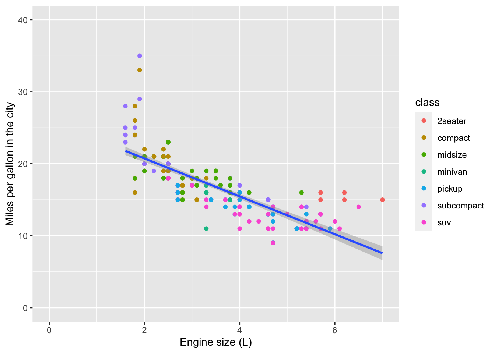

2 Making beautiful plots
Introductory information
This tutorial leads on from the Week 1 Part 1 tutorial. If you have opened a new R session in RStudio, first create a new .R text file and save it as Week_2_tidyverse.R in your Desktop WEHI_tidyR_course folder.
Now load the tidyverse package:
2.1 ggplot2. A grammar of graphics
The ggplot2 package is widely used and valued for its simple, consistent approach to making plots.
The ‘grammar’ of graphics relates to different components of a plot that function like different parts of linguistic grammar. For example, all plots require axes, so the x and y axes form one part of the ‘language’ of a plot. Similarly, all plots have data represented between the axes, often as points, lines or bars. The visual way that the data is represented forms another component of the grammar of graphics. Furthermore, the colour, shape or size of points and lines can be used to encode additional information in the plot. This information is usually clarified in a key, or legend, which can also be considered part of this ‘grammar’.
The most common components of a ggplot are
aesthetics
geometric representations
facets
coordinate space
coordinate labels
plot theme
We will cover each below.
The philosophy of ggplot is much better explained by the package author, Hadley Wickham here. For now, we just need to be aware that ggplots are constructed by specifying the different components that we want to display, based on underlying information in a data frame.
2.2 Building a ggplot
We are going to use the mpg_df data set created previously. If this is not visible in your environement pane, you can recreate it now:
Let’s check the first 6 rows of information contained in the mpg_df data frame, using the head() function:
## # A tibble: 6 x 11
## manufacturer model displ year cyl trans drv cty hwy fl class
## <chr> <chr> <dbl> <int> <int> <chr> <chr> <int> <int> <chr> <chr>
## 1 audi a4 1.8 1999 4 auto(l5) f 18 29 p compact
## 2 audi a4 1.8 1999 4 manual(m5) f 21 29 p compact
## 3 audi a4 2 2008 4 manual(m6) f 20 31 p compact
## 4 audi a4 2 2008 4 auto(av) f 21 30 p compact
## 5 audi a4 2.8 1999 6 auto(l5) f 16 26 p compact
## 6 audi a4 2.8 1999 6 manual(m5) f 18 26 p compactHere, we aim to produce a scatter plot of the engine volume (‘displacement’) vs fuel efficiency/mileage in the city (‘cty’), for each class of vehicle. The points on the plot will be coloured based on the vehicle class (right-most column).
2.3 Plot background
To start building the plot, we first specify the data frame that contains the relevant data. Here we are ‘sending the mpg_df data set into the ggplot function’:

Running this command will produce an empty grey panel. This is because we need to specify how different columns of the data frame should be represented in the plot.
2.4 Aesthetics aes()
We can call in different columns of data from mpg_df based on their column names. Column names are given as ‘aesthetic’ elements to the ggplot function, and are wrapped in the aes() function.
Because we want a scatter plot, each point will have an x and a y coordinate. We want the x axis to represent engine volume ( x = displ ), and the y axis to represent the city mileage ( y = cty ).
We give these specifications separated by a comma. Note that quotes are not required when giving variables within aes().
Those interested in why quotes aren’t required can read here about non-standard evaluation.
So far we have the gridlines for our x and y axis. ggplot knows the variables required for the plot, and thus the scale, but has no information about how to display the data points.
2.5 Geometric representations geom()
Given we want a scatter plot, we need to specify that the geometric representation of the data will be in point form, using geom_point().
Here we are adding a layer (hence the + sign) of points to the plot. We can think of this as similar to e.g. Adobe Photoshop which uses layers of images that can be reordred and modified individually.
For ggplot, each layer will be added over the plot according to its position in the code.
Now we have the scatter plot! Each row in the mpg_df data set now has an x coordinate, a y coordinate, and a designated geometric representation (point).
From this we can see that vehicles with smaller engines (lower displacement) tend to have higher mileage in the city.
2.5.1 A note about %>% and +
ggplot2, an early component of the tidyverse package, was written before the pipe was introduced. The + sign in ggplot2 functions in a similar way to the pipe in other functions in the tidyverse: by allowing code to be written from left to right.
2.6 Adding colour
The current plot could be more informative, to include information about the class of each vehicle.
In order to achieve this we need to use aes() again, and specify which column in mpg_df we want to be represented as the colour of the points.
Here, the aes() function containing the relevant column name, is given within the geom_point() function.
So now we can see that the subcompact class (purple points) tends to have small engines and good city mileage, whereas the SUVs (pink points) have very low city mileage and larger engines.
As commands get longer, we suggest to add carriage returns (new lines), which are best inserted after the %>% or + symbols.
In most cases, R is blind to white space and new lines, so this is simply to make our code more readable.
2.7 Adding layers
We can see the relationship between engine size and mileage. But what if we want to model this relationship with a trend line? We can add another ‘layer’ to this plot, using a different geometric representation of the data. In this case a trend line, which is in fact a summary of the data rather than a representation of each point.
The geom_smooth() function draws a trend line through the data. The default behaviour is to draw a local regression line (curve) through the points, however these can be hard to interpret. We want to add a straight line based on a linear model (‘lm’) of the relationship between x and y.
#add another layer of data representation.
mpg_df %>% ggplot(aes(x = displ, y = cty)) +
geom_point(aes(colour = class)) +
geom_smooth(method='lm') Note that the trend line is blocking out cetain points, because it is the ‘top layer’ of the plot. The geom layers that appear early in the command are drawn first, and can be obscured by the geom layers that come after them.
What happens if you switch the order of the geom_point() and geom_smooth() functions above? What do you notice about the trend line?
2.8 Facets
In some cases we want to break up a single plot into sub-plots, called ‘faceting’. Facets are commonly used when there is too much data to display clearly in a single plot. We will revisit faceting below, however for now, let’s try to facet the mpg_df plot according to vehicle engine size (displ).
To do this we use the tilde symbol ‘~’ to indicate the column name that will form each facet.
mpg_df %>% ggplot(aes(x = displ, y = cty)) +
geom_point(aes(colour = class)) +
geom_smooth(method='lm') +
facet_wrap( ~ class)Note that the aesthetics and geoms including the regression line that were specified for the original plot, are applied to each of the facets.
2.9 Coordinate space
ggplot will automatically pick the scale for each axis, and the type of coordinate space. Most plots are in cartesian (linear X vs linear Y) coordinate space.
For the mpg_df plot, let’s say we want the x and y origin to be set at 0. To do this we can add in xlim() and ylim() functions, which define the limits of the axes:
mpg_df %>% ggplot(aes(x = displ, y = cty)) +
geom_point(aes(colour = class)) +
geom_smooth(method='lm') +
xlim(0,7) + ylim(0,40)Further, we can control the coordinate space using coord() functions. Say we want to flip the x and y axes, we add coord_flip():
mpg_df %>% ggplot(aes(x = displ, y = cty)) +
geom_point(aes(colour = class)) +
geom_smooth(method='lm') +
xlim(0,7) + ylim(0,40) +
coord_flip()
2.10 Axis labels
By default, the axis labels will be the column names we gave as aesthetics aes(). We can change the axis labels using the xlab() and ylab() functions. Given that column names are often short and can be cryptic, this functionality is particularly important for effectively communicating results.
mpg_df %>% ggplot(aes(x = displ, y = cty)) +
geom_point(aes(colour = class)) +
geom_smooth(method='lm') +
xlim(0,7) + ylim(0,40) +
xlab('Engine size (L)') +
ylab('Miles per gallon in the city')
We can also add a title and subtitle with ggtitle()
2.11 Themes
Finally, the overall appearance of the plot can be modified using theme() functions. The default theme has a grey background which maximizes contrast with other contrasts.
You may prefer a ‘classic’ theme, a black & white theme or even theme_void(). Try them out.
There ggthemes package has plenty of other options.
mpg_df %>% ggplot(aes(x = displ, y = cty)) +
geom_point(aes(colour = class)) +
geom_smooth(method='lm') +
xlim(0,7) + ylim(0,40) +
xlab('Engine size (L)') +
ylab('Miles per gallon in the city') +
ggtitle(label = 'Engine size affects mileage', subtitle = 'Some extra info here too') +
theme_bw()